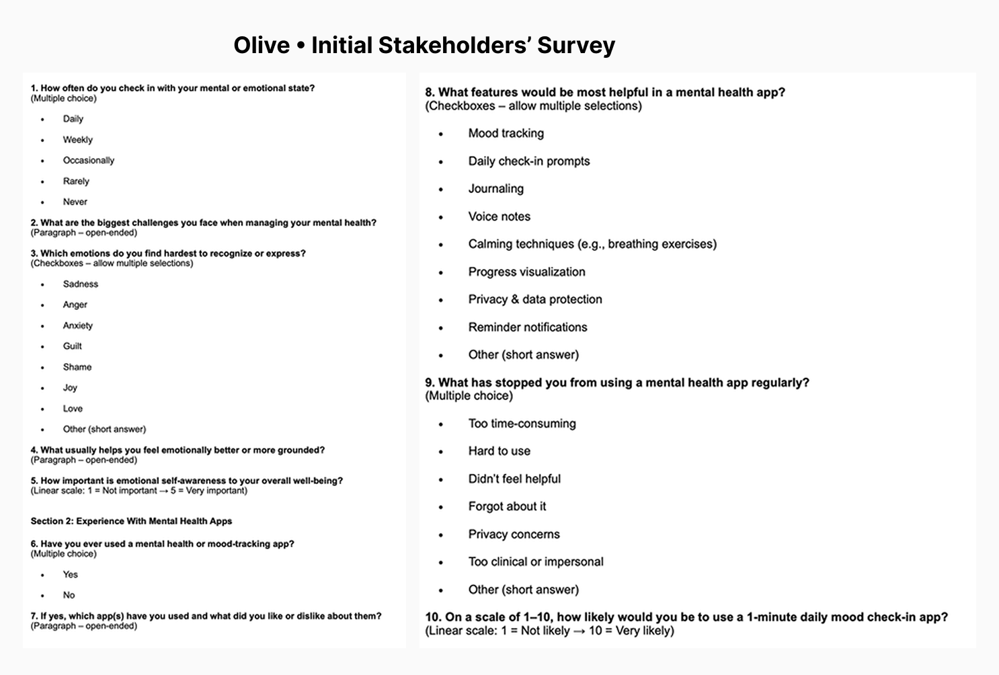
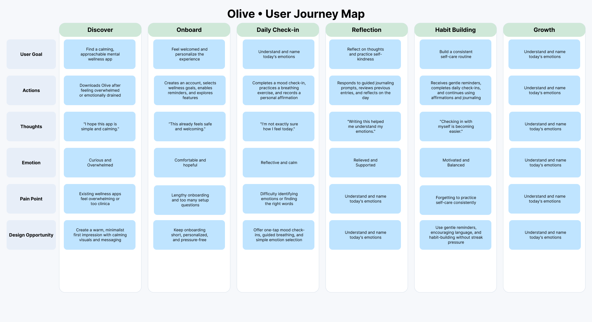
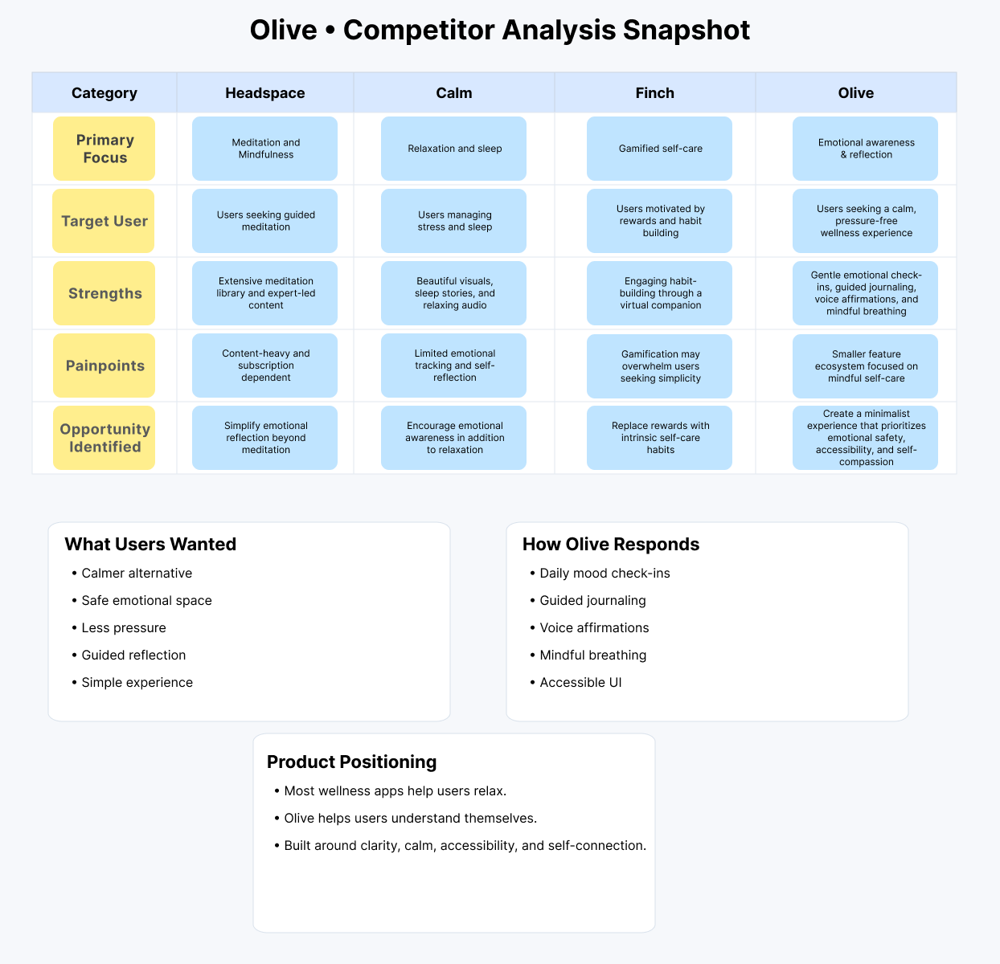

Olive

Overview
Olive is a minimalist mental wellness app that helps users slow down, reflect, and reconnect through daily mood tracking, guided breathing, and mindful self-reflection. Designed with accessibility and emotional wellbeing at its core, the app creates a calm, supportive experience that encourages users to build healthy emotional habits.
The Problem
Many people struggle to recognize and express their emotions, while existing mental health apps often feel overwhelming or overly clinical. User research revealed a need for a simple, approachable experience that helps users understand their emotions without adding pressure or complexity.
Constraints
The challenge was to design a calming experience that balanced simplicity with meaningful functionality. The app also needed to be accessible, inclusive, and supportive of users with diverse cognitive, visual, and emotional needs.
Process
I conducted surveys, user interviews, card sorting, and affinity mapping to uncover user needs and emotional patterns. Insights informed personas, user flows, and wireframes, which were refined through A/B testing, preference testing, and usability testing using a Rainbow Spreadsheet to identify behavioral trends and interaction friction.




Solution
- Daily Mood Check-ins — Quickly log emotions to build self-awareness and identify emotional patterns over time.
- Guided Journaling — Reflect with thoughtful prompts that encourage users to document feelings and track their emotional wellbeing.
- Voice Affirmations — Record and replay personalized affirmations to foster self-compassion and positive habits.
- Mindful Breathing — Access guided breathing exercises designed to reduce stress and promote relaxation.
- Accessible, Calming Experience — A WCAG-compliant interface with intuitive navigation, soft visuals, and inclusive interactions that create a safe, welcoming environment.
Impact
*Metrics represent prototype usability testing and design validation.